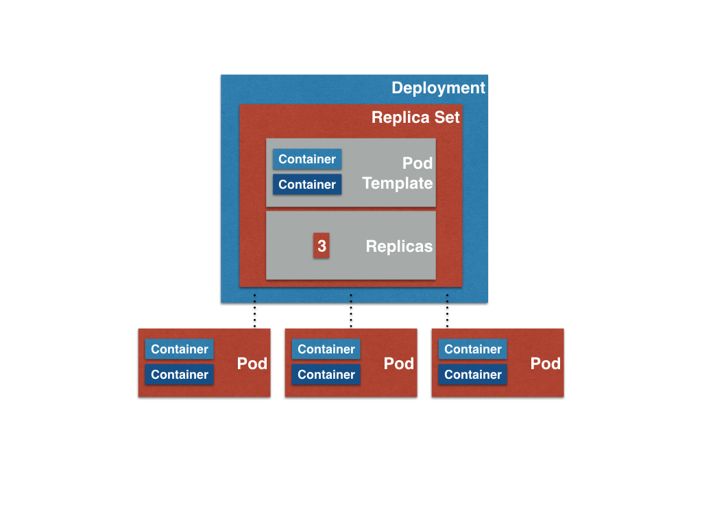
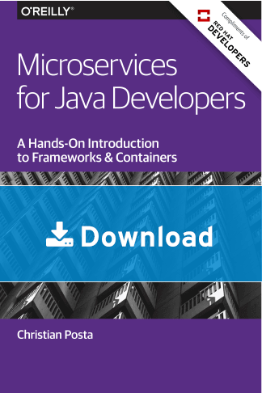

Getting started with
microservices
on Kubernetes
by Ioannis Canellos / @iocanel
about me...

agenda

so, what is a microservices
architecture?
decomposing / modeling
of systems into services
- provide a business functionality
- isolated and autonomous
- implemented and operated by individual teams
... individual releases
what is the value of
microservices?
- individual release cycles-> velocity
- autonomous -> agility
- fine grained services -> testability
what are the drawbacks of
microservices?
-
distributed systems are
hard
- operations are complex
new challenges
- discovery of services
- monitoring/tracing distributing systems
- testing complexity
- delivery complexity
what is docker?
a containerization platform
- package your application
- ship your application
- run your application
docker examples
this presentation is running on docker
let's hack a tiny `hello world`
let's create a docker image for the`hello world`
docker vs vm

what to remember
- tiny footprint
- extremely fast
- reproducible behavior
what is kubernetes?
a container platform
- deploy apps quickly and predictable
- scale your application
- roll-out new features easily
an overview

pod
A group of containers

share host
share volumes
service

replica set
Optionally you can use Deployment to create the replica set
time to digest...

minikube
a tool that makes it easy to run Kubernetes locally
Let's see minikube in action!
the developer user story
As a developer I want to start hacking code!
fabric8 maven plugin
automate image building
automate kubernetes resource generation
automate deployment
Let's see f-m-p in action!
why spring?
it was the easiest to fit in an ascii-cast!
spring-cloud-kubernetes
what other options do I have?
Everything!
other popular choices are:
- Wildfly Swarm
- Dropwizzard
- Lagom
arquillian cube kubernetes
- creates a session
- deploys application
- waits for ready state
- run the test suite
- cleans up
what is a session?
- The interaction with Kubernetes
- Shares lifecycle with the test Suite
- Has a unique Kubernetes Namespace
- What happens in session stays in session
what can I do inside a test?
- Validate the deployment
- Interact with application
let's add test to our app
troubleshooting
circuit breakers
how to handle an unresponsive service?
fail fast?
fallback?
distributed tracing
how do we troubleshoot latency issues?
how do we detect bottlenecks?
ci/cd
A somewhat more advanced topic...
resources
more resources
- https://github.com/prometheus/prometheus
- https://github.com/fabric8io/kubeflix
- https://github.com/fabric8io/kubernetes-zipkin
this presentations
- https://github.com/iocanel/voxxedthess2016
- https://hub.docker.com/r/iocanel/voxxed-thess